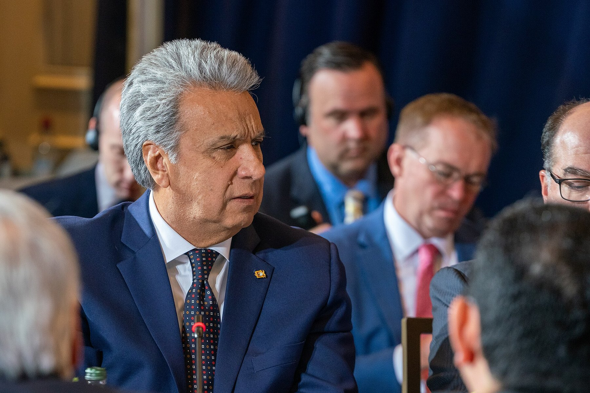
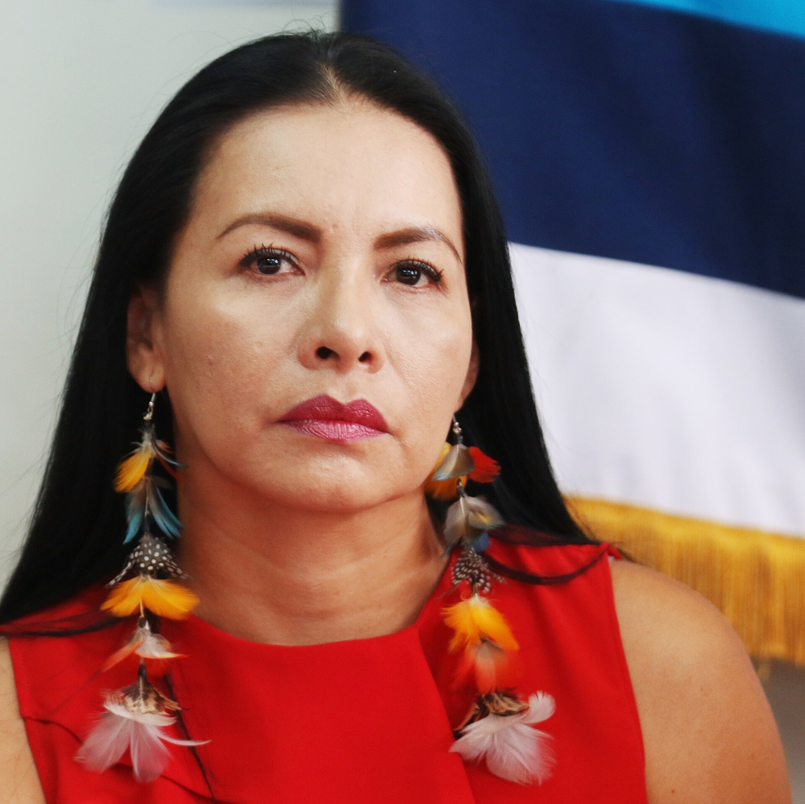
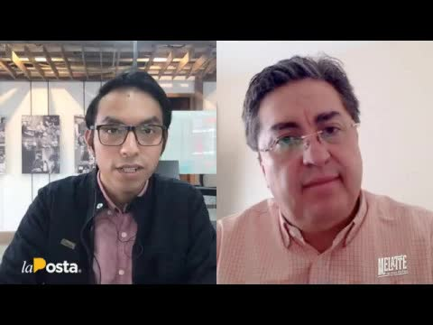
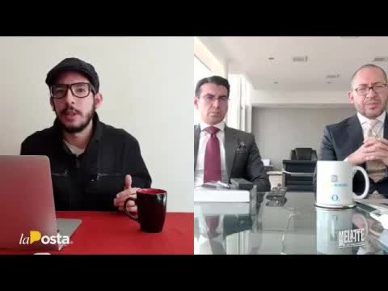
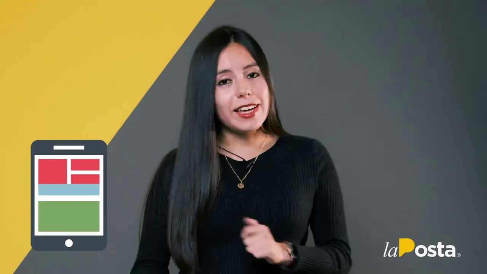

The referendum against corruption, paid for with corruption
Lenín Moreno reached the presidency in May 2017 as Rafael Correa's heir and broke with him within a few months. The referendum of February 4, 2018, was his tool: seven questions, including a lifetime ban from public office for those convicted of corruption, an end to indefinite reelection and an overhaul of the Council for Citizen Participation. The Yes campaign was presented as the crusade against the corruption of the Correa era. It won every question.

On June 14, 2020, in the middle of the pandemic, La Posta published a seven-minute report. A source from the president's former inner circle, after months of follow-up, had handed over files and emails about how that campaign was financed. The first email is dated December 19, 2017, at 3:54 p.m.: political consultant Luis Valdebenito sends a document called Plan Logístico Ozil, under the subject line Logistics budget, to Jorge Wated and to Patricio Beltrán, Alianza País's finance chief. Wated was then director of Secob, the public works agency, and in 2020 chaired the board of the Social Security Institute. La Posta made all the documentation available to the oversight authorities.
The referendum against corruption was financed corruptly.
La Posta, June 14, 2020
The general management budget
The files were a parallel set of books, similar to those in the Arroz Verde ("Green Rice") case that had exposed private companies' contributions to Correa's campaigns. Hence the name. The difference made it worse: this time the contributors were not private businessmen but managers of public companies, who handle everyone's money, giving to the campaign of Moreno's party and of his then vice president, María Alejandra Vicuña, later prosecuted for corruption. The document was titled General budget for campaign logistics management and listed staff, salaries and supplies.
What it was spent on
One file, the supplies budget: nearly a million in T-shirts and flags, half a million in balloons, leaflets and posters, another half million in display stands and bus advertising, and a salaried team: warehouse managers, assistants, couriers, twelve distribution operators and an accountant. Another file, total spending: 1.4 million on electoral oversight, 1.5 million on brigades, 300,000 on mobilization, 200,000 on contingencies, 100,000 on political action, 30,000 on the advance team. That comes to 3.53 million, plus the remaining million and a half in cash: at least five million.
Twelve state-owned companies
Where the money came from. According to the books, from Flopec, the oil tanker fleet; Cear, the company that runs high-performance training centers; Enami, the mining company; Ecuador Estratégico; Astinave, the Navy's shipyards; Petroecuador and Petroamazonas; Fabrec; Correos del Ecuador; CNT; Celec; and the Casa para Todos program, which doesn't build houses but does move money. Some contributed 4,000 dollars, like Cear; others 100,000, like Ecuador Estratégico; Petroecuador, a million. At least 2.3 million was raised among the state companies, plus a million and change recorded as a courtesy from Celec. Correos appears with a 100,000-dollar in-kind swap for the campaign's courier service. CNT was asked for communications and phones.
Who put up the money

The names are Carondelet's. Jorge Wated coordinated the contributing companies. Gustavo Baroja, a senior Alianza País leader, appears receiving a million dollars in cash from Petroecuador for logistics. There are cash deliveries to David Tellez, an Interior Ministry official, and to Ricardo Rhon, an official close to Wated from the National Finance Corporation. And Eduardo Mangas, Moreno's right-hand man in his first year, who fell from grace after a leaked audio recording. Diana Atamaint, president of the National Electoral Council, had not submitted the final spending report, and the two-year legal deadline had already passed. On May 25, 2018, the party submitted its official accounting: not even half a million, according to voices inside the CNE.
The fact that the issue was left to die at the CNE doesn't mean the justice system can't and shouldn't do its part.
La Posta, June 14, 2020
How it ended
On June 16 La Posta expanded on the case on its show with César Montúfar and Fabricio Villamar; on the 19th with Marcelo Simbaña, the CREO assembly member who took the issue to the National Assembly and requested an audit by the Comptroller General's Office, information from the CNE and the tax agency (SRI) and an investigation by the Council for Citizen Participation; and on the 23rd with the lawyers for Mónica Castillo, the former Cear manager who confirmed what had been published before the Attorney General's Office. Castillo testified that the sheet listing companies, managers and amounts that La Posta showed was the one presented to her at the January 4, 2018, meeting, which she attended in an official vehicle with a travel permit because she thought it was a work meeting, and that she paid out of her own pocket for the 4,000 dollars' worth of 100,000 posters she was asked for. Five other managers had testified that they knew nothing. Her defense team said that serving officials called her to ask what she would say. On that June 23, 2020, the eleven members of the Oversight Committee unanimously approved a schedule to investigate the use of state company funds in the Yes campaign. They gave it La Posta's name: Arroz Moreno. They summoned the twelve companies between June 26 and July 1; Baroja, Tellez, Rhon and Mangas on July 3; Atamaint on the 6th. They requested information from the Comptroller General's Office, the Attorney General's Office, the CNE and the SRI. On July 8 a review of the reports filed with the CNE confirmed that what had been declared did not come close to covering what had been spent.
That's where it stopped. Boscán drew the comparison on the show: four hours after Arroz Verde was published there was an arrest, and two weeks later a cooperating witness; ten days after Arroz Moreno there were only statements. The legislative investigation produced no report with consequences, and the Attorney General's Office never announced charges in this case. In December 2020 La Posta took stock of the government's promises: of the 90 million the anti-corruption drive was supposed to recover, 3.9 million had been recovered, and the cases that touched the government, such as INA Papers, were left out. Moreno left office in May 2021 with the National Assembly investigating his circle over the INA Papers case.
The outcome came from another direction. In March 2019 the Attorney General's Office opened an investigation into bribes paid by the Chinese company Sinohydro over the Coca Codo Sinclair hydroelectric plant, 76.1 million paid between 2009 and 2018. In April 2023 it requested pretrial detention for Moreno; in September 2025 it charged him along with his wife, his daughter, his brothers and his sisters-in-law. On August 29, 2026, a court sentenced him to five years in prison for bribery. Moreno, who lives in Paraguay, rejects the charges. For Arroz Moreno, nothing.
What doesn't add up
- Declared to the CNE< $500,000
- Parallel books≈ $5,000,000
- Legislative investigationOpened, no report
- Criminal investigationFive managers denied it; Castillo confirmed the spreadsheet and handed over documents
- MorenoConvicted in a different case (Sinohydro, 2026)
Updated September 5, 2026
Unanswered questions
- Which senior official called the January 4, 2018, meeting?
- Who ordered the managers of state-owned companies to contribute?
- Which suppliers were paid the 3.5 million in sham contracts?
- Why did the National Electoral Council not close the spending report on time?
- Did any state-owned company get the money back?
Step by step
- Dec 19, 2017The first email
Valdebenito sends the Plan Logístico Ozil to Wated and Beltrán, referring to a meeting held that same day.
- Jan 4, 2018The meeting
Managers of state-owned companies are summoned and asked for money, according to Castillo's testimony.
- Feb 4, 2018The referendum
Yes wins all seven questions.
- May 25, 2018The final accounting
Alianza País reports less than 500,000 dollars to the CNE, according to sources inside the agency.
- Jun 14, 2020Arroz Moreno
La Posta publishes the parallel books.
- Jun 16-23, 2020Three Café shows
Montúfar and Villamar; Simbaña; the lawyers for witness Castillo.
- Jun 23, 2020Oversight
11 votes to 0 to investigate.
- Jun 26 to Jul 6, 2020Hearings
The twelve companies, Baroja, Tellez, Rhon, Mangas and Atamaint.
- Jul 8, 2020The reports
The review at the CNE confirms that what was declared does not cover what was spent.
- May 24, 2021Moreno leaves office
No one charged over Arroz Moreno.
- Aug 29, 2026Sinohydro conviction
Five years in prison for bribery, in a different case.
Who's who

Lenín Moreno
President of the Republic. Promoter of the 2018 referendum.
Jorge Wated
Director of Secob in 2017; chairman of the IESS board in 2020.
Patricio Beltrán
Alianza País finance chief under both the Correa and Moreno governments.
Diana Atamaint
President of the National Electoral Council.
Mónica Castillo
Former manager of Cear, the company that runs the high-performance training centers.
Photos via Wikimedia Commons. Lenín Moreno: https://www.flickr.com/search/?user_id=50197436%40N08&view_all=1&text=Len%C3%ADn%20Moreno (CC BY-SA 2.0); Diana Atamaint: Agencia de Noticias ANDES (CC BY-SA 2.0).
Responses and reactions
- Jorge Wated
He called the report a "malicious and reckless accusation" and said it was not "within the bounds of the truth" (Así Amaneció, June 18, 2020). He had earlier told La Posta he would not comment until the criminal investigation was over.
- Lenín Moreno and María Paula Romo
The president said the aim was to delegitimize the referendum; the government minister called it a distraction.
- Oversight Committee
Unanimously approved an investigation into the alleged use of state companies' public funds in the Yes campaign.
The other videos



The transcripts
Arroz Moreno
June 14, 2020 · 991 wordsafter months of follow-up a source from the former inner circle of the president of the republic lenín moreno agreed to hand over to this media outlet files and emails linked to the financing of the yes campaign in the 2018 referendum exactly that campaign in which the president promised to end corruption was carried out with corrupt money a paradox yes illegalities all…
Read the full transcriptCafé la Posta: Marcelo Simbaña, investigations after Arroz Moreno
06/19/2020 · 9,414 wordsthey say to one another and above all which assembly members are going to get involved or rather take center stage in what will be today's session starting at 6 p.m. hot off the press hot off the press we also tell you that today we'll have to keep an eye on two court matters that will take place on one hand there's the habeas corpus request by jorge glass if giorgi seeks to get out of prison and the day…
Read the full transcriptCafé la Posta: Key testimony in #ArrozMoreno
06/23/2020 · 7,273 wordsan interview with the lawyer for one of the key testimonies that is announced as key in the arroz muriendo case that is being investigated by the attorney general's office to jog your memory a bit la posta published ten days ago the investigative report arroz moreno in an investigation that puts the spotlight on the illegal financing of the 2018 referendum in this case we revealed that many…
Read the full transcriptMoreno's empty promises
December 8, 2020 · 996 wordsoffer sound and have come during these years of the moreno era and since we know that words are carried off by the wind today we take a little look at some proposals by president benin moreno a great have gone unnoticed others have been forgotten and the most talked-about ones seem to have been just shots in the air like that one so that it tells you to go to the bielas and they never are the first year of government moreno kept repeat…
Read the full transcriptTranscripts from each show's automatic captions. They have not been corrected by hand: use them to find a phrase and jump to the exact minute in the video, not as verbatim quotes.